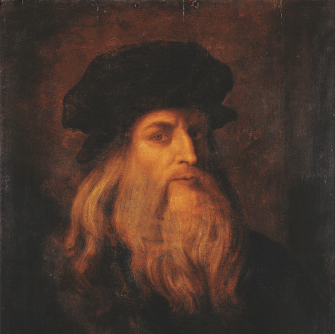

Leonardo da Vinci
MalarstwoWłoski renesansowy geniusz. Autor najsłynniejszego obrazu na świecie – „Mona Lisa”, a także „Ostatniej Wieczerzy” i „Damy z gronostajem”.
Poznaj wybitnych twórców, których dzieła prezentujemy w naszej galerii.
Włoski renesansowy geniusz. Autor najsłynniejszego obrazu na świecie – „Mona Lisa”, a także „Ostatniej Wieczerzy” i „Damy z gronostajem”.
Norweski malarz i grafik, uznawany za prekursora ekspresjonizmu. Jego najsłynniejsze dzieło, „Krzyk”, stało się ikoną współczesnego lęku.
Holenderski malarz postimpresjonistyczny, którego twórczość o żywych barwach (np. „Gwiaździsta noc”) zyskała sławę po śmierci.
Francuski malarz postimpresjonistyczny. Jego nowatorskie podejście do perspektywy i formy (np. w „Graczach w karty”) otworzyło drogę do kubizmu.
Mistrz holenderskiego malarstwa rodzajowego. Znany z niezwykłego operowania światłem w kameralnych scenach wnętrz, np. „Dziewczyna z perłą”.
Niemiecki malarz romantyczny. Jego pejzaże, takie jak „Wędrowiec nad morzem mgły”, ukazują potęgę natury i małość człowieka wobec niej.
Niemiecki malarz i grafik renesansu. Znany z niezwykle precyzyjnych miedziorytów i drzeworytów, a także studiów przyrodniczych jak „Młody zając”.
Włoski geniusz Odrodzenia: rzeźbiarz, malarz, architekt i poeta. Twórca monumentalnych dzieł: rzeźb „Dawid” i „Pieta” oraz fresków w Kaplicy Sykstyńskiej.
Nadworny rzeźbiarz faraona Echnatona, autor polichromowanego popiersia królowej Nefertiti, które zostało odnalezione w jego pracowni w Armanie.
Grecki rzeźbiarz z Rodos, przypuszczalny twórca „Nike z Samotraki” – dynamicznego posągu bogini zwycięstwa, który zdobi Luwr.

Ludwika Nitschowa była rzeźbiarką XX wieku, znaną jako autorka Pomnika Stefana Starzyńskiego w Warszawie, łączącego realizm z patriotycznym przesłaniem.
Apollonios z Aten był greckim rzeźbiarzem okresu hellenistycznego, znanym jako autor rzeźby „Odpoczywający pięściarz”, wyróżniającej się realizmem.
Jean-Baptiste Carpeaux był francuskim rzeźbiarzem XIX wieku, znanym z ekspresyjnego realizmu i rzeźby „Ugolino i jego synowie”.
Frédéric-Auguste Bartholdi był francuskim rzeźbiarzem XIX wieku, twórcą Statuy Wolności w Nowym Jorku, znanym z monumentalnych i symbolicznych dzieł.
Antonio Canova był włoskim rzeźbiarzem XIX wieku, znanym z rzeźby „Psyche i Kupidyn”, łączącej perfekcję anatomiczną z poetycką ekspresją.
Mathew B. Brady był amerykańskim fotografem XIX wieku, pionierem portretów ukazujących autorytet wynalazców i postaci historycznych.
Edward S. Curtis był amerykańskim fotografem i etnografem, znanym z serii „The North American Indian” dokumentującej kulturę rdzennych Amerykanów.
Felice Beato był włosko-brytyjskim fotografem XIX wieku, pionierem fotografii wojennej i podróżniczej, znanym ze zdjęć japońskich samurajów i krajobrazów.
Jacob Riis był duńsko-amerykańskim fotografem i dziennikarzem XIX wieku, znanym z dokumentowania życia najbiedniejszych mieszkańców Nowego Jorku.
Lewis Hine był amerykańskim fotografem początku XX wieku, znanym z dokumentowania pracy dzieci oraz wspierania reform przeciwko niej.
Adolphe Braun był francuskim fotografem XIX wieku, znanym z artystycznych martwych natur i fotografii studyjnej. Jego prace łączyły precyzję detali i estetykę.
Carleton Watkins był amerykańskim fotografem XIX wieku, znanym z dokumentowania krajobrazów zachodnich USA, w tym „Wodospadu Welon Ślubny”.
EEugène Atget był francuskim fotografem przełomu XIX i XX wieku, znanym z dokumentowania starego Paryża, w tym „Łachmaniarza”.
Francis Frith był brytyjskim fotografem podróżnikiem XIX wieku, znanym z dokumentowania egzotycznych miejsc i starożytnej architektury, w tym „Luksoru”.